Bộ sưu tập chọn theo cách trình bày của báo cáo mẫu: ảnh thật, ảnh trước–sau xử lý, hình giải thích từng phép tính và ảnh phần cứng có chú giải.
Ưu tiên01. YuNet trên khuôn mặt thật
Đề xuất: 2.2.3. Nguyên lý phát hiện khuôn mặt bằng YuNet · 640 × 480 px
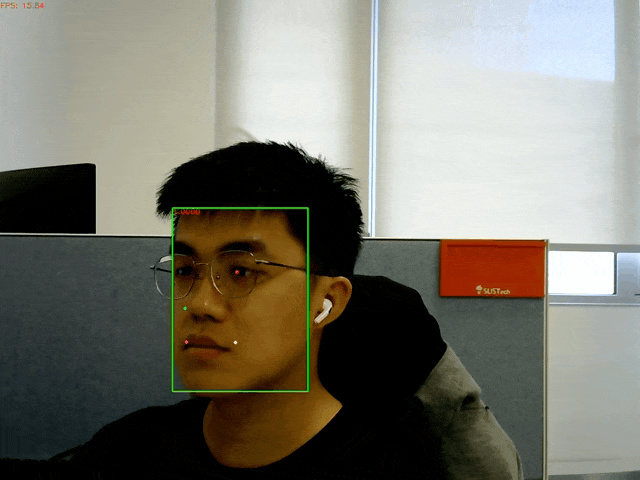
Ví dụ phát hiện hộp mặt và năm điểm mốc bằng YuNet. Nguồn: OpenCV Zoo.
Dùng để thấy đầu ra detector. FPS trong ảnh thuộc ví dụ của nguồn, không phải phép đo DA2.
Mở trang nguồn · Tải ảnh gốcGhi nguồn và quyền sử dụng
MIT theo LICENSE của thư mục YuNet
Ngày truy cập: 24/10/2026.02. YuNet phát hiện nhiều khuôn mặt
Đề xuất: 2.2.3. YuNet · 2048 × 1150 px
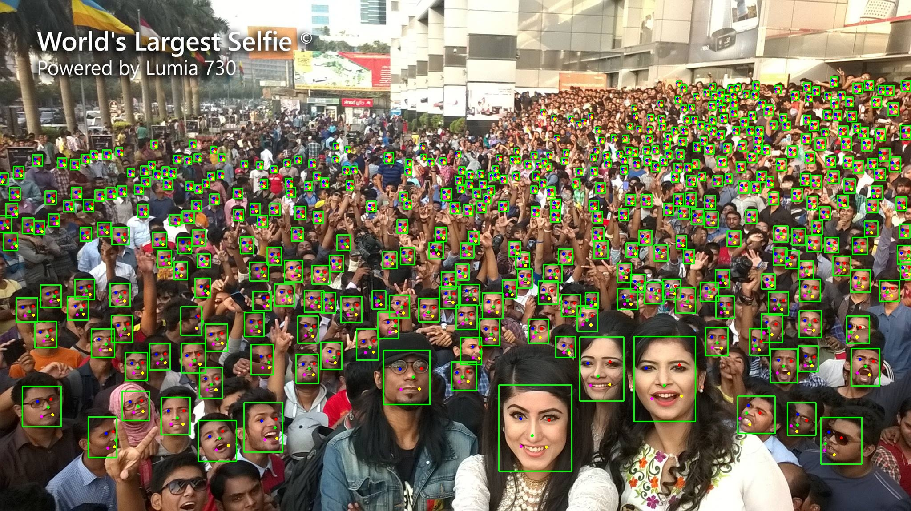
Ví dụ nhiều hộp mặt trong một ảnh. Nguồn: OpenCV Zoo.
Chỉ minh họa detector; hệ thống DA2 chọn một tài xế và xử lý trường hợp nhiều mặt riêng.
Mở trang nguồn · Tải ảnh gốcGhi nguồn và quyền sử dụng
MIT theo LICENSE của thư mục YuNet
Ngày truy cập: 24/10/2026.03. Ảnh gốc và ảnh bị làm mờ
Đề xuất: 2.1.4. Chất lượng ảnh · 450 × 283 px
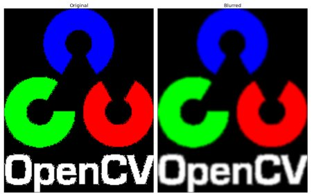
So sánh ảnh gốc với ảnh sau lọc Gaussian. Nguồn: OpenCV, Smoothing Images.
Giải thích mất chi tiết khi ảnh mờ. Không dùng hình này như kết quả kiểm thử mắt của DA2.
Mở trang nguồn · Tải ảnh gốcGhi nguồn và quyền sử dụng
Ghi nguồn OpenCV; chưa xác minh giấy phép riêng của ảnh
Ngày truy cập: 24/10/2026.04. Từ ảnh đầu vào đến điểm số phân loại
Đề xuất: 2.8.4. Nguyên lý mạng nơ-ron tích chập · 1255 × 601 px

Ví dụ các lớp xử lý trong một mạng tích chập. Nguồn: CS231n.
Sơ đồ CNN khái quát; kiến trúc YOLOv8n thực tế vẫn dùng hình kiểm kê hiện có.
Mở trang nguồn · Tải ảnh gốcGhi nguồn và quyền sử dụng
Ghi nguồn CS231n; chưa xác minh giấy phép riêng của ảnh
Ngày truy cập: 24/10/2026.05. Ví dụ các bộ lọc đã học
Đề xuất: 2.8.4. Nguyên lý CNN · 627 × 248 px
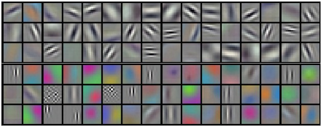
Ví dụ trực quan hóa các bộ lọc ở lớp đầu. Nguồn: CS231n.
Các trọng số thuộc ví dụ mạng của nguồn, không phải trọng số hai classifier DA2.
Mở trang nguồn · Tải ảnh gốcGhi nguồn và quyền sử dụng
Ghi nguồn CS231n; chưa xác minh giấy phép riêng của ảnh
Ngày truy cập: 24/10/2026.06. Bước trượt của bộ lọc
Đề xuất: 2.8.4. Nguyên lý CNN · 861 × 172 px
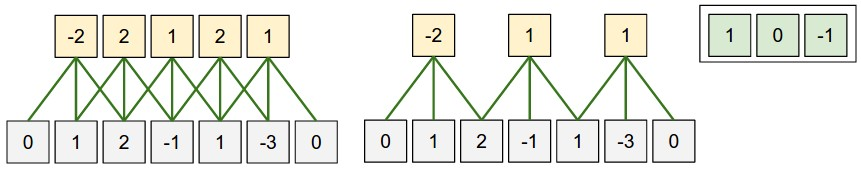
Minh họa stride và vị trí bộ lọc trên đầu vào. Nguồn: CS231n.
Dùng cạnh phần giải thích stride, chỉ chọn nếu chữ đủ rõ ở khổ in.
Mở trang nguồn · Tải ảnh gốcGhi nguồn và quyền sử dụng
Ghi nguồn CS231n; chưa xác minh giấy phép riêng của ảnh
Ngày truy cập: 24/10/2026.07. Phép lấy giá trị lớn nhất trong vùng
Đề xuất: 2.8.7. YuNet và các khối xử lý · 787 × 368 px
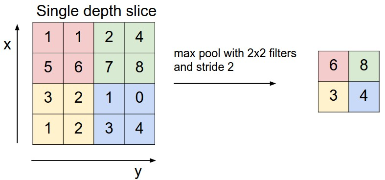
Ví dụ max pooling với cửa sổ 2 × 2. Nguồn: CS231n.
Max pooling khác global average pooling ở đầu phân loại YOLOv8n; không gắn nhầm hai khối.
Mở trang nguồn · Tải ảnh gốcGhi nguồn và quyền sử dụng
Ghi nguồn CS231n; chưa xác minh giấy phép riêng của ảnh
Ngày truy cập: 24/10/2026.08. Hoạt ảnh bộ lọc trượt
Đề xuất: 2.8.4. Nguyên lý CNN · 244 × 259 px
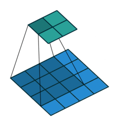
Tích chập không đệm, bước trượt một. Nguồn: Vincent Dumoulin và Francesco Visin.
GIF xem chuyển động; khi đưa vào Word dùng một khung hình rõ hoặc chuỗi khung có chú thích.
Mở trang nguồn · Tải ảnh gốcGhi nguồn và quyền sử dụng
MIT; ghi tên tác giả và A guide to convolution arithmetic for deep learning
Ngày truy cập: 24/10/2026.09. Ảnh thật bo ROCK 4D
Đề xuất: 2.5.3. Máy tính nhúng Radxa ROCK 4D · 1200 × 800 px
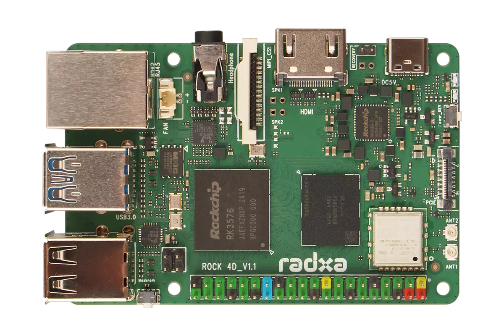
Mặt trên bo Radxa ROCK 4D. Nguồn: Radxa Docs.
Ảnh sản phẩm của hãng, không phải ảnh bộ thiết bị đã lắp trong đề tài.
Mở trang nguồn · Tải ảnh gốcGhi nguồn và quyền sử dụng
CC BY 4.0 theo footer Radxa Docs
Ngày truy cập: 24/10/2026.10. Các cổng và thành phần trên ROCK 4D
Đề xuất: 2.5.3. Máy tính nhúng Radxa ROCK 4D · 949 × 1081 px
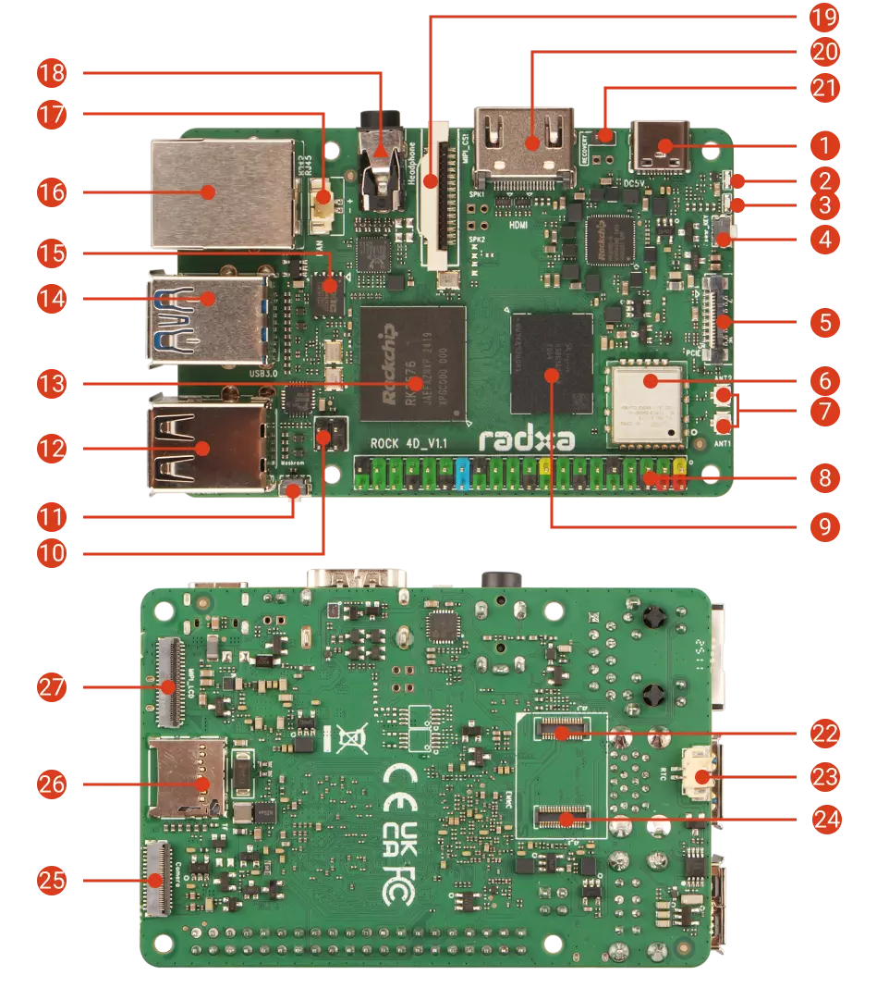
Vị trí các cổng và thành phần trên ROCK 4D. Nguồn: Radxa Docs.
Kèm chú giải các số cần dùng: nguồn, USB, Ethernet, SoC; đối chiếu phiên bản bo khi mô tả thiết bị thực.
Mở trang nguồn · Tải ảnh gốcGhi nguồn và quyền sử dụng
CC BY 4.0 theo footer Radxa Docs
Ngày truy cập: 24/10/2026.11. ESP32 DevKitC có chú giải thành phần
Đề xuất: 2.7.1. Giới thiệu ESP32 · 1738 × 751 px
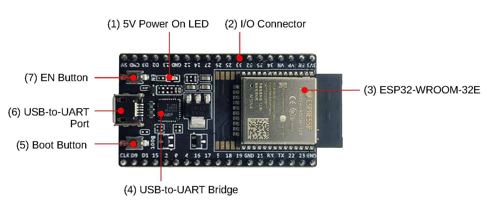
Các thành phần của ESP32-DevKitC V4. Nguồn: Espressif.
Ảnh bo phát triển tham khảo. Chưa xác nhận bo ESP32 lắp thực tế là đúng biến thể DevKitC V4.
Mở trang nguồn · Tải ảnh gốcGhi nguồn và quyền sử dụng
Ghi nguồn Espressif; chưa xác minh giấy phép riêng của ảnh
Ngày truy cập: 24/10/2026.12. Sơ đồ chân ESP32 DevKitC V4
Đề xuất: 2.7.2. Cấu hình giao tiếp · 1600 × 1091 px
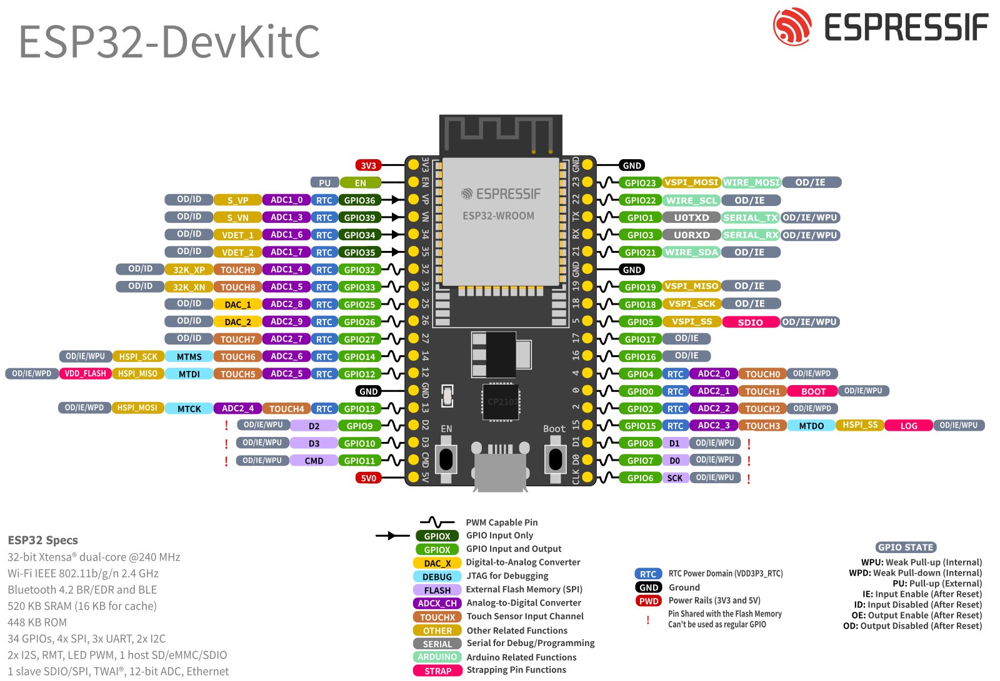
Sơ đồ chân ESP32-DevKitC V4. Nguồn: Espressif.
Chỉ dùng với chú thích đúng biến thể. Sơ đồ dây DA2 vẫn thể hiện GPIO25, driver còi và mass chung.
Mở trang nguồn · Tải ảnh gốcGhi nguồn và quyền sử dụng
Ghi nguồn Espressif; chưa xác minh giấy phép riêng của ảnh
Ngày truy cập: 24/10/2026.